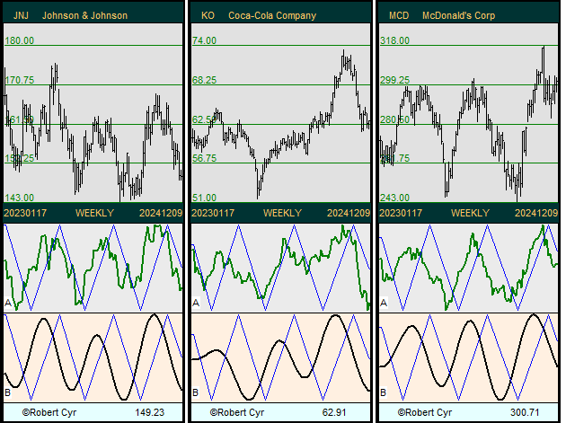

Introduction.
The Formula.
Our computer models use spectrography (spectral analysis) to produce high-level, second-generation quantitative indicators that are precursors to a new approach in the analysis of financial, economic and scientific movements. The mathematical formula used is:
In finance, one of the first basic rules is...
1. A good positioning is... downward or upward? For the short, medium or long term?
As you will see in our examples, the first strength of our quantitative model is the fact that it is based on cycle analysis. This allows it to determine not only short-, medium- and long-term trends but especially the duration of the current cycle and how much time it has left before changing direction.
2. Example of positioning.
The answer is in the monthly chart. If its cycle is firmly established on the upside, then we are more in the presence of a buying opportunity if there is a decline. We then position ourselves to take advantage of the temporary decline that is coming.
For more details, daily, two-day or ten-day charts are also used.
A good timing is therefore to identify and wait until the Max and Min points are reached before going long or short.

We can already extrapolate the next turnaround zone and how long it will take to reach it.
The indicators.
Treasury Yield 30 Years
Then three indicators are presented, the first in A being well known, i.e. a Momentum followed in B and C by our Slow Spectral and Fast Spectral indicators.
When the indicators are above the Cut-offline, the stock is rising and falling when the indicators cross the Cut-offline.
- The reliability of the cycle used: the more equal and symmetrical the spacing, the greater the level of confidence in the identified cycle.
- Detection of Phase shifts which are explained later.
- Symmetrical extrapolation to locate the next reversal zone of the stock.
- Note that Max and Min points are relatively well identified.
Thus, we can better situate a stock in its progression, its means are we at the beginning or at the end of a trend… good timing. - Strangulation zones == strong potential for gain.
For example, above on the weekly chart, we have at point X the momentum which is at a peak, and it can only continue its path by crossing the Cut-offline downwards. Similarly, at point Y, it is at its lowest and will have no choice but to go back up by crossing the Cut-offline upwards.
Unless there is a reversal by Phase shift (as described below), the potential for gain is fantastic when a strangulation point occurs. - When the rectangular indicator D is very symmetrical, we can determine the next reversal zone by extrapolating it as shown below.
This allows us to visualize the time remaining before a stock begins its trend reversal.
Phase shift.
Phase shifts occur regularly in financial fluctuations and present an opportunity for gains when they are identified.
1. Normal cycle on t1 and t2, no Phase shift.
Note how it is easier to determine when the rise (or fall) will end. Also note that the movement following the end of a Phase shift is often very pronounced. Last observation, when the momentum line quickly crosses upward the Cut-offline again, cover immediately yours short positions!
Static versus Dynamic lines.
All the other lines on our charts are dynamic lines.
They are like Bezier curves or best fit curves. Its means that the today point position can be altered by the next days data.
Warning:
As seen above, some stocks had the same stable cycle for many years like the waves on a lake, and we profit from this.
However, if a sudden and major unexpected event hits a stock, our cycle analysis will be disturbed and reset, will have the same effect as if a rock is thrown into the lake.
Training in spectral analysis.
For source code dealing with Fourier series, the following textbook is available from Cambridge University Press:
Numerical Recipes
The Art of Scientific Computing
which is available in various programming languages.
https://www.cambridge.org/us/universitypress/subjects/mathematics/numerical-recipes
However, the following book is a must-read:
Profit Magic of Stock Transaction Timing - J. M. Hurst
https://fr.scribd.com/doc/285173005/Profit-Magic-of-Stock-Transaction-Timing-J-M-Hurst
Disclaimer: The content on this site is provided as general information only and should not be taken as investment advice. All site content, including, but not limited to: forum comments by the author or other posters, articles and charts, advertisements, and everything else on this site, shall not be construed as a recommendation to buy or sell any security or financial instrument, or to participate in any particular trading or investment strategy. The author may or may not have a position in any company or advertiser referenced above. Any action that you take as a result of information, analysis, or advertisement on this site is ultimately your responsibility. Consult your investment advisor before making any investment decisions.
Maestria Quantitative Research - Robert Cyr